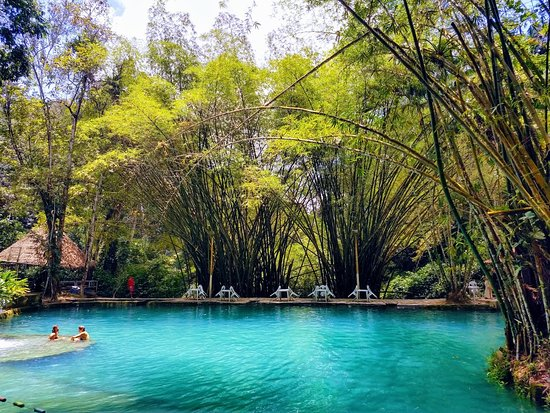

PONTOS TURÍSTICOS

Um bom lugar para admirar produções feitas por artistas alagoanos, como: quadros, esculturas em ceramica e troncos de arvores regionais; exposição de artesanato local e criações que fazem parte das festas populares de Alagoas.
O santuário é uma das áreas de Mata Atlântica que abriga diversas espécies nativas e possui um criatório autorizado pelo IBAMA. Bom para quem quer curtir banhos sem precisar ir para as praias.

A Casa Natal de Marechal Deodoro está localizado no centro de Marechal Deodoro e possui indiscutível valor para o patrimônio histórico alagoano. É um bom lugar para quem quer conhecer mais sobre o Marechal e sobre a história de Alagoas.